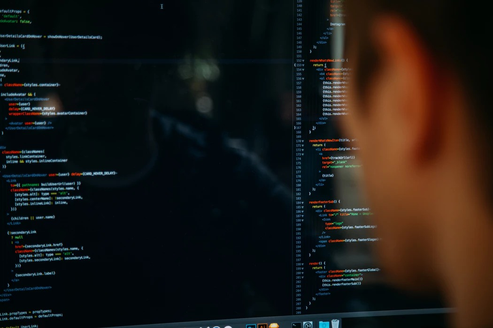

Algunos de mis hobbies

Fútbol
Una pasión desde pequeño, una afición para compartirla.

Videojuegos
Como todo niño pequeño y adolescente, mis ratos libres los pasaba frente a una consola

Informática
Además de ser el campo al que me quiero dedicar, desde siempre me ha llamado mucho la atención este mundo
Android/iOs
Sin duda un sueño, poder trabajar dedicandome al desarrollo de alguno de estos sistemas